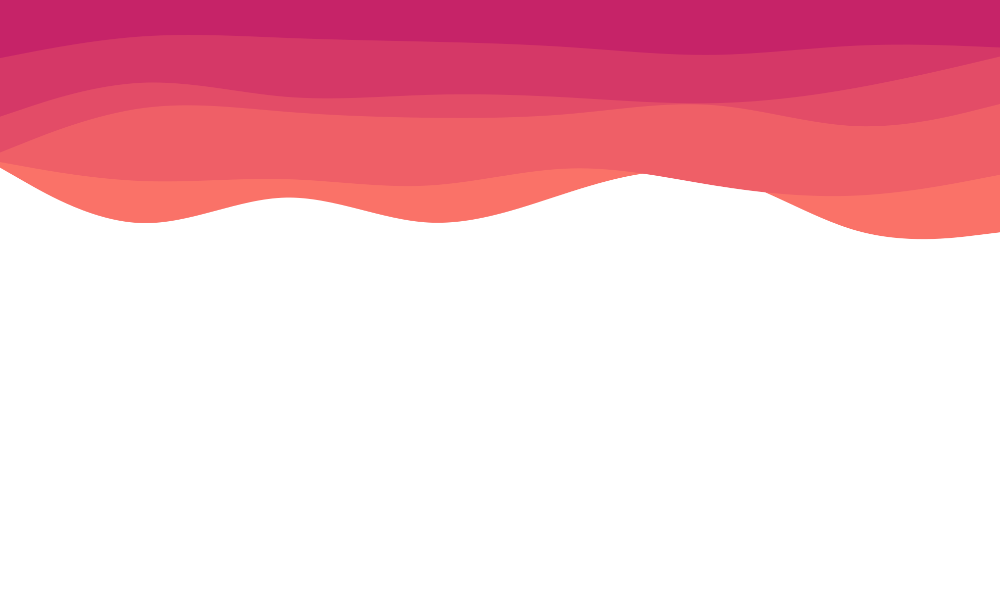

Hi
I'm Niko
My actual name is Ali
But i like to be called Niko
I am a Full Stack Developer
My Skills
Java
V 8 & 11 - Junior
In progress
50%
My SQL
V 8.0.28 - Junior
In progress
50%
Docker
V 20.10 - Junior
In progress
30%
Maven
V 3.8.5 - Junior
In progress
50%
Spring
V 5.3.18 - Junior
In progress
50%
Spring Boot
V 2.6.6 - Junior
In progress
50%
Angular
V 13 - Junior
In progress
50%
Javascript
V ES6,ES7,ES8 - Junior
In progress
50%
CSS
V3 - Medior
In progress
70%
HTML
V 5 - Medior
In progress
70%
Git
Git, Github - Junior
In progress
50%
Swift
V 5.6 - Junior
In progress
50%
Swift UI
V 3 - Junior
In progress
50%
UI / UX
Design & prototype - Medior
In progress
70%
Tailwind
V 3 - Junior
In progress
50%
My Projects
Spring Security
It is a simple login page with help of spring security and hibernate validator
Brewery App
A simple app with Spring,hibernate and ...
Student management
It is a student management system.A simple app to work with servlet and jsp.
Follow Me